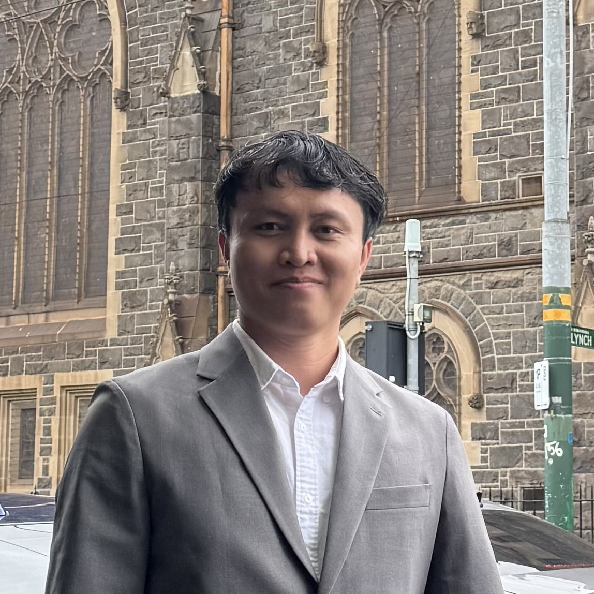
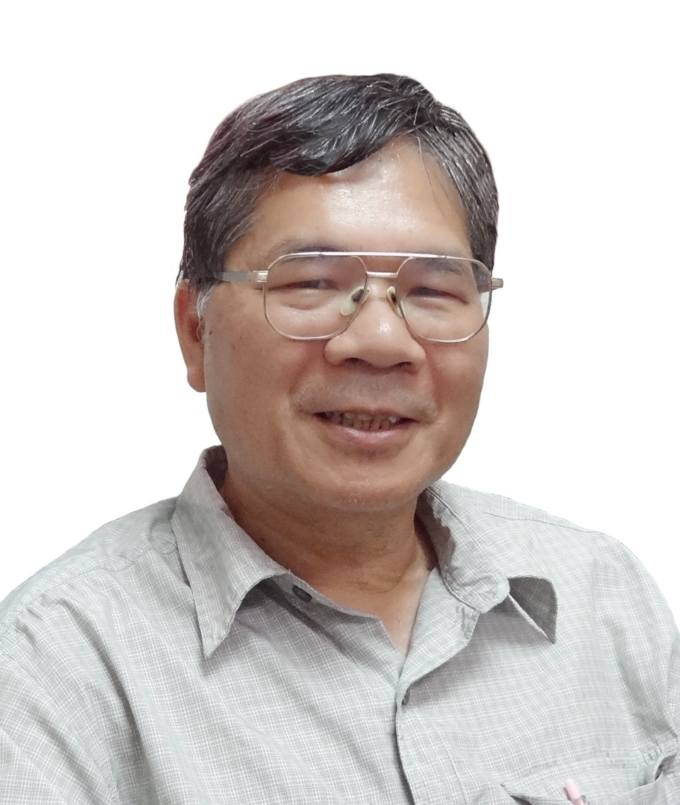
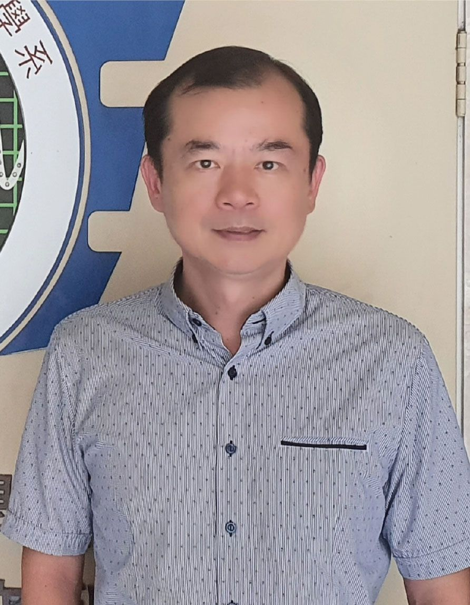
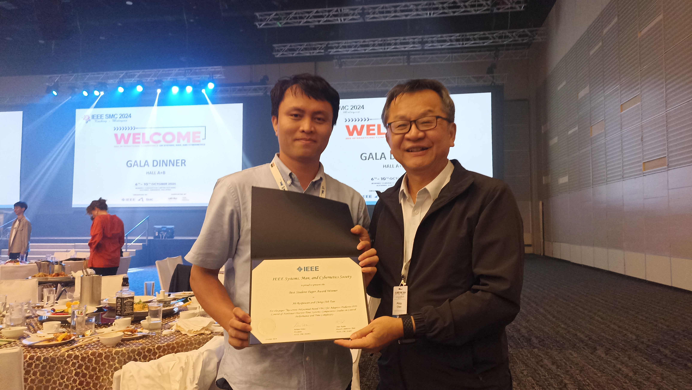
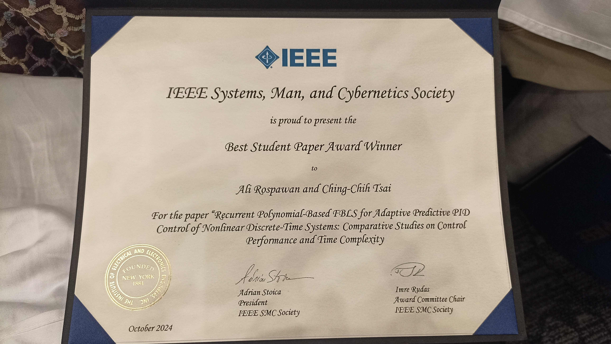
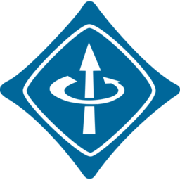
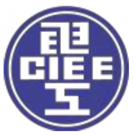
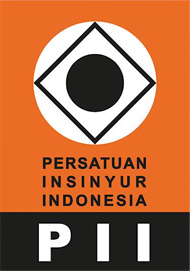

Ali Rospawan
Ph.D. Candidate · Lecturer · Electrical Engineer
I am a Ph.D. candidate in Electrical Engineering at National Chung Hsing University (NCHU), Taiwan, under Professor Ching-Chih Tsai, and a lecturer at Politeknik Manufaktur Negeri Bangka Belitung, Indonesia.
My research develops intelligent and adaptive controllers based on fuzzy neural networks and broad learning systems, validated on real industrial processes and autonomous mobile robots. This approach is shaped by over six years in industry as an automation and electrical design engineer.
My work has received multiple recognitions, including Best Student Paper (1st place) at IEEE SMC 2024. I also serve as a journal reviewer, a conference committee member, and Chair of the IEEE NCHU Student Branch.

Taichung, Taiwan

Taichung, Taiwan
Publications
Journal Articles
Peer-reviewed journal papers indexed in Scopus and/or Web of Science.
SINTA-Indexed Journals
Peer-reviewed papers indexed in SINTA (Science and Technology Index) — the Indonesian national academic indexing system.
Conference Papers
Peer-reviewed papers presented at international and national conferences.
Book, Thesis & Dissertation
Graduate research thesis and dissertation work.
Posters & Award Presentations
Research posters presented at scientific competitions and symposia.
Honors & Awards


Qualifications
Languages
Technical
Service

SMC


YP
Adaptive PID, fractional-order, and sliding-mode controllers for nonlinear industrial systems and autonomous mobile robots.
Hybrid architectures of fuzzy neural networks, broad learning systems, reinforcement learning, and evolutionary algorithms.
Trajectory tracking, cooperative localization, and autonomous steering for AMRs.
RGB-D SLAM, photogrammetric keyframe selection, and depth/point-cloud pipelines.